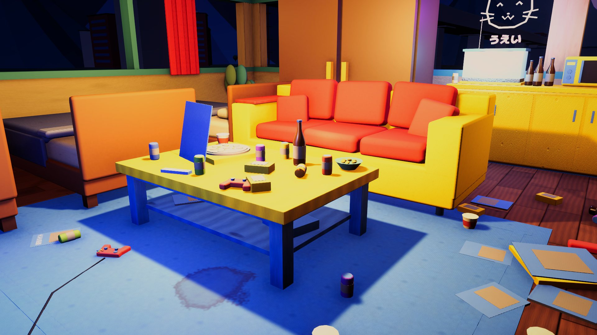
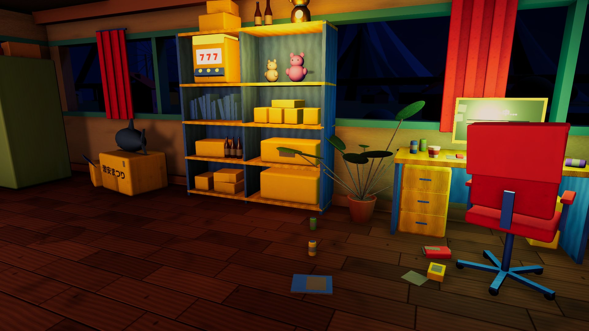
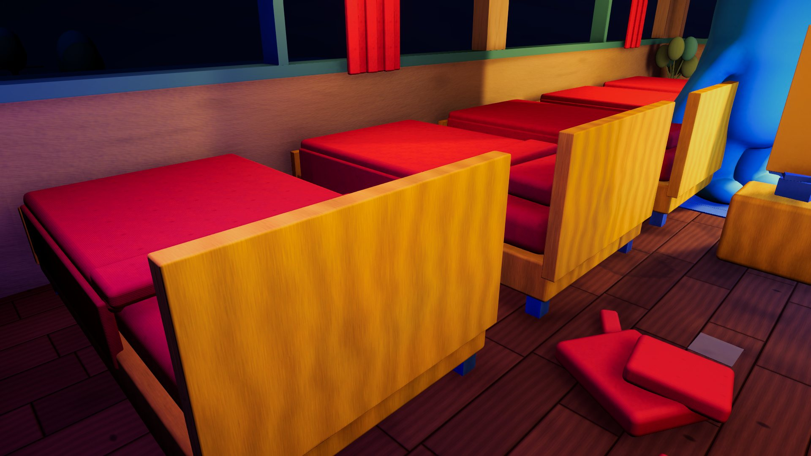

画質の改善（マテリアル・ベベル・ライティング・仕上げ）
左から段階の順。同じカメラ・時間帯・解像度（1920×1080）で撮っています。画像を押すと原寸で開きます。HUD とメニューには画面の仕上げをかけていません。
- 前 今まで：ゲーム中のカメラは画面の仕上げなし・アンチエイリアスなし（タイトルは仕上げあり・アンチエイリアスなし）。それを再現して撮った
- 0 カメラ：プレイヤーとタイトルのカメラで画面の仕上げを有効にし、SMAA（High）を付けた
- 1 マテリアル：テンプレを18個に（ゴム・陶器・発光を追加）。全テンプレに微細な色ムラ。ソファ・ぬいぐるみ・クッションは起毛の布に。コード・持ち手・靴底はゴム、植木鉢・お椀は陶器
- 2 ベベル：部屋とタイトルの部品に、部品ごとの強・中・弱で角の丸みを付けた（部屋327・タイトル403）。強＝実寸の短い辺の32%（上限9cm）、中＝9%（3.5cm）、弱＝2.5%（8mm）。ソファの座面・クッション、布団・枕は強、天板・棚板・家電は中、脚・支柱・レールは弱。薄い紙・印刷は丸めない
- 3 ギミックのプレハブ：ベッド・冷蔵庫・クローゼット・ブラックジャック台・スロットの Visual の中だけを、テンプレの子マテリアルと部品ごとのベベルにした（ルート・当たり判定・スクリプト・通信は触っていない）
重さ（Play Mode・GameRoom・エディタ上）
| 段階 | フレーム時間 | 三角形 | ドローコール | SetPass |
|---|---|---|---|---|
| 前 | 約6.9ms（5.2〜8.8） | 約105万 | 約2,210 | 170 |
| 0 カメラ | 約7.8ms（7.0〜8.4） | 約105万 | 約2,210 | 173 |
| 1 マテリアル | 約8.3ms（7.3〜8.8） | 約105万 | 約2,220 | 166〜169 |
| 2 ベベル | 約8.9ms（8.3〜10.1） | 約129万（+24万） | 約2,280 | 168〜169 |
| 3 プレハブ | 約10.2ms（9.1〜10.6）※計測のぶれを含む | 約129万 | 約2,280 | 168〜169 |
01 タイトル


06 キャラのアップ


03 ゲーム中（夜・HUD付き）


04 リビング（夜）

05 リビング（朝）

07 家具のアップ（こたつ・ソファ）

08 ベッドのアップ


09 棚と机


10 ベッドのアップ（タイトルの部屋。段階2から撮影）

ベベルの強さ（こたつ・ソファ）

ベベルの強さ（棚・机・椅子）

ベベルの強さ（ベッド）
